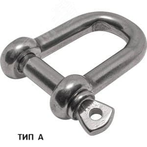

DIN 82101 Скоба такелажная прямая
Стандарт
DIN 82101
Цена от
55,13 ₽
Размерный ряд
Покрытие
Такелаж » DIN 82101 скоба (серьга) такелажная прямая тип А
Варианты и размеры (18)
| Наименование | Размер | Длина, мм | Материал | Покрытие | Цена |
|---|---|---|---|---|---|
| DIN 82101 Скоба такелажная прямая M10 L=40мм | M10 | 40 | 106,00 ₽ | ||
| DIN 82101 Скоба такелажная прямая M12 L=63мм | M12 | 63 | 148,00 ₽ | ||
| DIN 82101 Скоба такелажная прямая M16 L=13мм | M16 | 13 | 105,00 ₽ | ||
| DIN 82101 Скоба такелажная прямая M20 L=60мм | M20 | 60 | 208,00 ₽ | ||
| DIN 82101 Скоба такелажная прямая M22 L=2мм | M22 | 2 | 112,00 ₽ | ||
| DIN 82101 Скоба такелажная прямая M24 L=2мм | M24 | 2 | 120,00 ₽ | ||
| DIN 82101 Скоба такелажная прямая M27 L=3мм | M27 | 3 | 134,00 ₽ | ||
| DIN 82101 Скоба такелажная прямая M30 L=4мм | M30 | 4 | 149,00 ₽ | ||
| DIN 82101 Скоба такелажная прямая M36 L=5мм | M36 | 5 | 177,00 ₽ | ||
| DIN 82101 Скоба такелажная прямая M39 L=6мм | M39 | 6 | 192,00 ₽ | ||
| DIN 82101 Скоба такелажная прямая M45 L=8мм | M45 | 8 | 225,00 ₽ | ||
| DIN 82101 Скоба такелажная прямая M48 L=10мм | M48 | 10 | 246,00 ₽ | ||
| DIN 82101 Скоба такелажная прямая M5 L=10мм | M5 | 10 | 50,00 ₽ | ||
| DIN 82101 Скоба такелажная прямая M6 L=16мм | M6 | 16 | 59,50 ₽ | ||
| DIN 82101 Скоба такелажная прямая M60 L=16мм | M60 | 16 | 327,00 ₽ | ||
| DIN 82101 Скоба такелажная прямая M68 L=20мм | M68 | 20 | 388,00 ₽ | ||
| DIN 82101 Скоба такелажная прямая M72 L=25мм | M72 | 25 | 435,00 ₽ | ||
| DIN 82101 Скоба такелажная прямая M8 L=25мм | M8 | 25 | 78,10 ₽ |